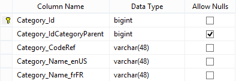
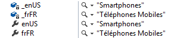

The RetrieveCurrentLanguageOnly option is used to limit the amount of string data retrieved from multilingual columns.
Have a look to the following table with a multilingual column.
The default value of the RetrieveCurrentLanguageOnly property is false.
IUserContext userContext = new ClientContext() { Culture = Cultures.EN }; userContext.Options.RetrieveCurrentLanguageOnly = false; // This is the default value using (var service = new ServiceProxy<ICategoryService>()) { Category item = service.Proxy.GetById(userContext, id: 1); }
All the values are retrieved whatever the culture of the user.
If only the value of the culture of the user is necessary the value true should be used.
IUserContext userContext = new ClientContext { Culture = Cultures.EN }; userContext.Options.RetrieveCurrentLanguageOnly = true; using (var service = new ServiceProxy<ICategoryService>()) { Category item = service.Proxy.GetById(userContext, id: 1); }
This option is welcome when using WCF to limit the data serialization with huge strings.